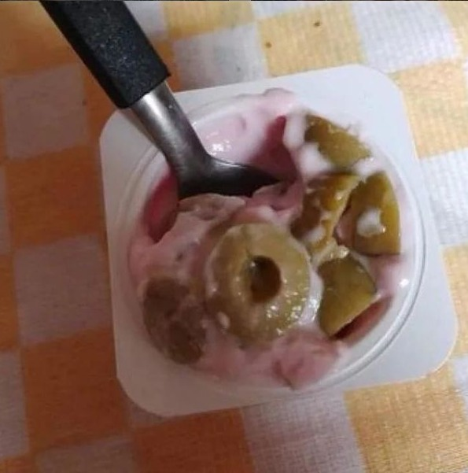

Olive Yogurt

Description
Very good recipe that my mom used to make me when I was a child
Ingredients
- 1 little Danone yogurt
- a bunch of olives to taste
Steps
- Get a spoon so you will be able to taste it properly
- Open up the little Danone
- Throw all olives inside the yogurt
- Mix it well
- Enjoy